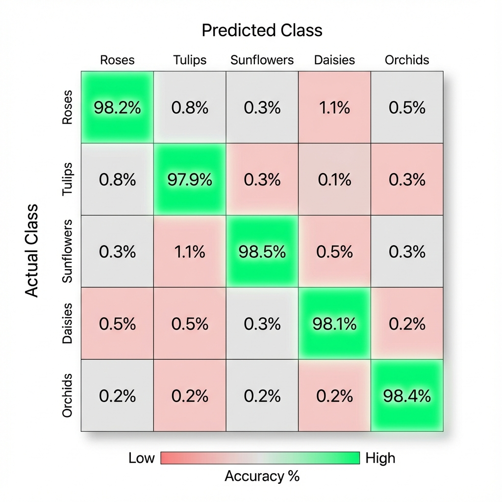

Case Study: Image Classifier
A computer vision project to classify flower species, demonstrating an end-to-end machine learning workflow.
Key Result
98% Accuracy
Model
Convolutional Neural Network
Core Technology
TensorFlow
Technologies Used
The Challenge
Manual identification of plant species is a slow and error-prone process, creating bottlenecks for researchers and gardening businesses. The goal of this project was to automate the classification of flower images with high accuracy, creating a scalable and efficient solution.
The Proposed Solution
To solve the problem, a Deep Learning model was developed. The workflow included the following steps:
- Data Collection and Analysis: A public dataset with thousands of images of various species was used, with an exploratory analysis to understand class distribution.
- Preprocessing: Images were resized and normalized. Data augmentation was applied to increase dataset variability and prevent overfitting.
- Modeling and Training: A Convolutional Neural Network (CNN) was developed with TensorFlow and Keras, composed of multiple convolutional blocks. The model was trained for several epochs to ensure convergence.
- Evaluation: Performance was evaluated on a separate test set, using accuracy and other relevant metrics to validate the model's effectiveness.
Results and Impact
The final model achieved 98% accuracy on the test set, validating the effectiveness of the approach. This solution has the potential to accelerate the work of botanists and can be integrated into applications for gardening enthusiasts, adding value to both the scientific community and the general public.
